At first, you'll refer to them as the GeographicalName Nicknames, but once you get to know them, you can call them just the Nicknames.
Note: The dotted circles are drawn that way only for accessibility reasons. Treat all dotted circles of a color as if they are drawn in the same color and that color is distinct from the other circle colors, both dotted and solid.
{% include "round_files/endgame/book.tmpl" with book="cts-kidshave" %}
Geographical name contains multiple pairs of double letters
Geographical name contains the word "green"
Geographical name contains two capital letters
Geographical name contains two capital letters
Geographical name contains two capital letters
Geographical name contains two capital letters
Geographical name contains two capital letters
Geographical name contains two capital letters
Home ballpark contains the word "field"
Home ballpark contains the word "field"
Home ballpark contains the word "park"
Home ballpark contains the word "park"
Home ballpark contains the word "park"
Home ballpark contains the word "stadium"
Home ballpark contains the word "stadium"
Home ballpark contains the word "stadium"
Home ballpark contains the word "stadium"
In the East Division
In the Northeast Division
In the South Division
In the West Division
Located in Alabama
Located in Iowa
Located in Oregon
Located in Pennsylvania
Nickname begins with a vowel
Nickname contains the name of an animal
Nickname contains two capital letters
Nickname contains two capital letters
Nickname contains two capital letters
Nickname contains two capital letters
Nickname contains two capital letters
Nickname has one syllable
Nickname has one syllable
Nickname has one syllable
Nickname is eight letters long
Nickname is eight letters long
Nickname is identical to parent club's
Nickname is nine letters long
Nickname is nine letters long
Nickname is nine letters long
[See puzzle for images]
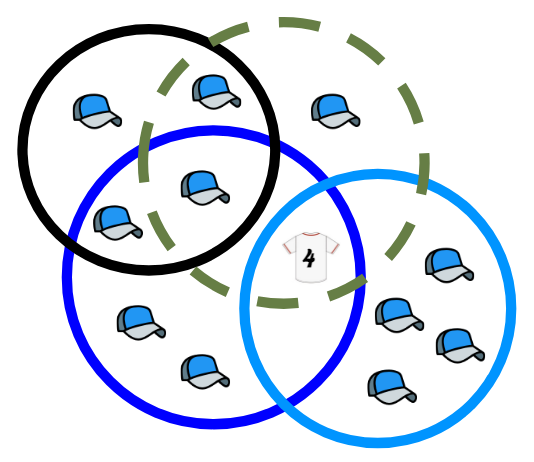
Four partially overlapping circles, each assigned a letter only for identification purposes in this alt text. Clockwise from top left: a black circle (A), a dotted green circle (B), a light blue circle (C), and a dark blue circle (D).
Circle A: Overlaps with B and D.
Circle B: Overlaps all others.
Circle C: Overlaps with B and D.
Circle D: Overlaps all others.
In space enclosed by just A, there is one baseball cap.
In space enclosed by just B, there is one baseball cap.
In space enclosed by just C, there are four baseball caps.
In space enclosed by just D, there are two baseball caps.
In space enclosed by A and B, there is one baseball cap.
In space enclosed by A and D, there is one baseball cap.
In space enclosed by B/C/D, there is a baseball jersey with the number 4 on it.
In space enclosed by A/B/D, there is one baseball cap.
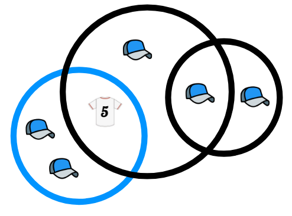
Three partially overlapping circles, each assigned a letter only for identification purposes in this alt text. Left to right: a light blue circle (A), a black circle (B), and another black circle (C).
Circle A: Overlaps with B.
Circle B: Overlaps both others.
Circle C: Overlaps with B.
In space enclosed by just A, there are two baseball caps.
In space enclosed by just B, there is one baseball cap.
In space enclosed by just C, there is one baseball cap.
In space enclosed by A and B, there is a baseball jersey with the number 5 on it.
In space enclosed by B and C, there is one baseball cap.
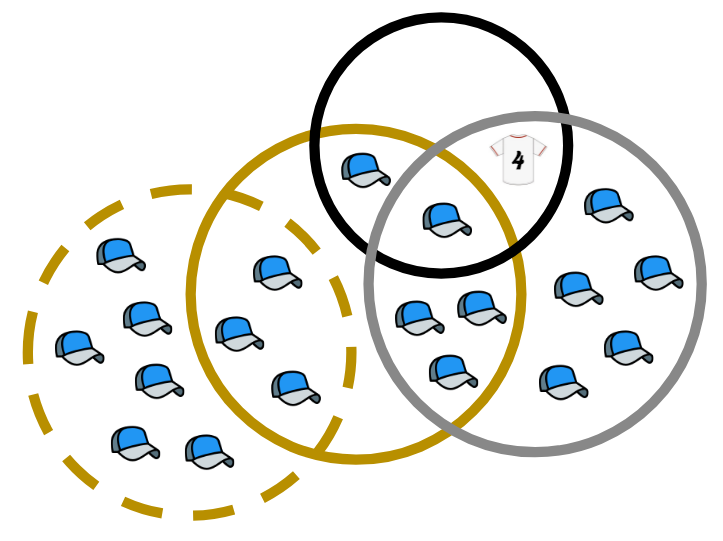
Four partially overlapping circles, each assigned a letter only for identification purposes in this alt text. From left to right: a dotted yellow circle (A), a yellow circle (B), a black circle (C), and a gray circle (D).
Circle A: Overlaps with B.
Circle B: Overlaps all others.
Circle C: Overlaps with B and D.
Circle D: Overlaps with B and C.
In space enclosed by just A, there are six baseball caps.
In space enclosed by just D, there are five baseball caps.
In space enclosed by A and B, there are three baseball caps.
In space enclosed by B and C, there is one baseball cap.
In space enclosed by B and D, there are three baseball caps.
In space enclosed by C and D, there is a baseball jersey with the number 4 on it.
In space enclosed by B/C/D, there is one baseball cap.
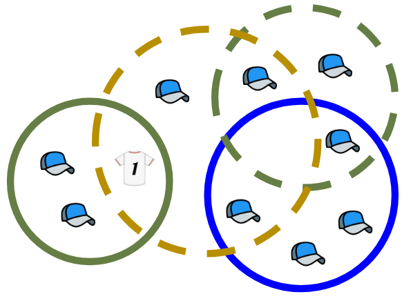
Four partially overlapping circles, each assigned a letter only for identification purposes in this alt text. From left to right: a green circle (A), a dotted yellow circle (B), a dotted green circle (C), and a dark blue circle (D).
Circle A: Overlaps with B.
Circle B: Overlaps all others.
Circle C: Overlaps with B and D.
Circle D: Overlaps with B and C.
In space enclosed by just A, there are two baseball caps.
In space enclosed by just B, there is one baseball cap.
In space enclosed by just C, there is one baseball cap.
In space enclosed by just D, there are two baseball caps.
In space enclosed by A and B, there is a baseball jersey with the number 1 on it.
In space enclosed by B and C, there is one baseball cap.
In space enclosed by B and D, there is one baseball cap.
In space enclosed by C and D, there is one baseball cap.
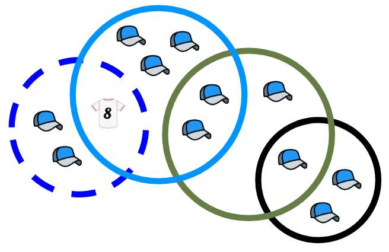
Four partially overlapping circles, each assigned a letter only for identification purposes in this alt text. From left to right: a dotted dark blue circle (A), a light blue circle (B), a green circle (C), and a black circle (D).
Circle A: Overlaps with B.
Circle B: Overlaps with A and C.
Circle C: Overlaps with B and D.
Circle D: Overlaps with C.
In space enclosed by just A, there are two baseball caps.
In space enclosed by just B, there are three baseball caps.
In space enclosed by just C, there is one baseball cap.
In space enclosed by just D, there are two baseball caps.
In space enclosed by A and B, there is a baseball jersey with the number 8 on it.
In space enclosed by B and C, there are two baseball caps.
In space enclosed by C and D, there is one baseball cap.
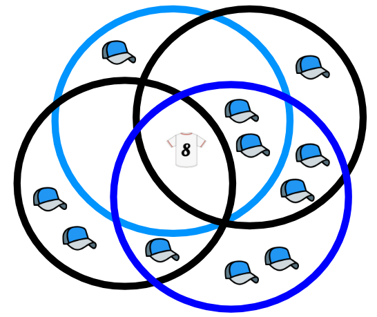
Four partially overlapping circles, each assigned a letter only for identification purposes in this alt text. Clockwise from top left: a light blue circle (A), a black circle (B), a dark blue circle (C), and another black circle (D).
Each circle overlaps all of the others.
In space enclosed by just A, there is one baseball cap.
In space enclosed by just B, there is one baseball cap.
In space enclosed by just C, there are two baseball caps.
In space enclosed by just D, there are two baseball caps.
In space enclosed by B and C, there are two baseball caps.
In space enclosed by C and D, there is one baseball cap.
In space enclosed by A/B/C, there are two baseball caps.
In space enclosed by all four circles, there is a baseball jersey with the number 8 on it.
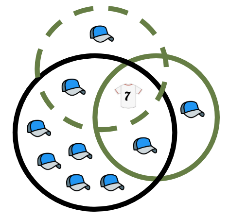
Three partially overlapping circles, each assigned a letter only for identification purposes in this alt text. Clockwise from top left: a dotted green circle (A), a green circle (B), and a black circle (C).
Each circle overlaps the other two.
In space enclosed by just A, there is one baseball cap.
In space enclosed by just B, there is one baseball cap.
In space enclosed by just C, there are five baseball caps.
In space enclosed by A and C, there is one baseball cap.
In space enclosed by B and C, there is one baseball cap.
In space enclosed by all three circles, there is a baseball jersey with the number 7 on it.
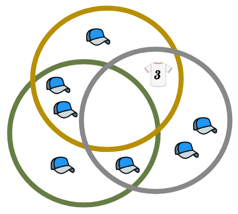
Three partially overlapping circles, each assigned a letter only for identification purposes in this alt text. Clockwise from top left: a yellow circle (A), a grey circle (B), and a green circle (C).
Each circle overlaps the other two.
In space enclosed by just A, there is one baseball cap.
In space enclosed by just B, there are two baseball caps.
In space enclosed by just C, there is one baseball cap.
In space enclosed by A and B, there is a baseball jersey with the number 3 on it.
In space enclosed by A and C, there are two baseball caps.
In space enclosed by B and C, there is one baseball cap.
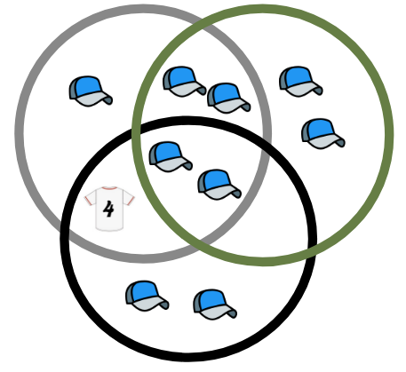
Three partially overlapping circles, each assigned a letter only for identification purposes in this alt text. Clockwise from top left: a grey circle (A), a green circle (B), and a black circle (C).
Each circle overlaps the other two.
In space enclosed by just A, there is one baseball cap.
In space enclosed by just B, there are two baseball caps.
In space enclosed by just C, there are two baseball caps.
In space enclosed by A and B, there are two baseball caps.
In space enclosed by A and C, there is a baseball jersey with the number 4 on it.
In space enclosed by all three circles, there are two baseball caps.
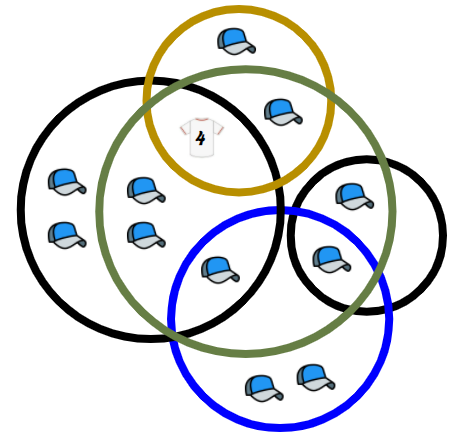
Five partially overlapping circles, each assigned a letter only for identification purposes in this alt text. From left to right: a black circle (A), a green circle (B), a yellow circle (C), a dark blue circle (D), and another black circle (E).
Circle A: Overlaps with B, C, and D.
Circle B: Overlaps all others.
Circle C: Overlaps with A and B.
Circle D: Overlaps with A, C, and E.
Circle E: Overlaps with B and D.
In space enclosed by just A, there are two baseball caps.
In space enclosed by just C, there is one baseball cap.
In space enclosed by just D, there are two baseball caps.
In space enclosed by A and B, there are two baseball caps.
In space enclosed by B and C, there is one baseball cap.
In space enclosed by B and E, there is one baseball cap.
In space enclosed by A/B/C, there is a baseball jersey with the number 4 on it.
In space enclosed by A/B/D, there is one baseball cap.
In space enclosed by B/D/E, there is one baseball cap.
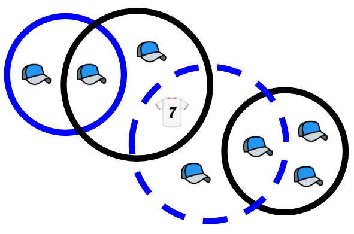
Four partially overlapping circles, each assigned a letter only for identification purposes in this alt text. From left to right: a dark blue circle (A), a black circle (B), a dotted dark blue circle (C), and another black circle (D).
Circle A: Overlaps with B.
Circle B: Overlaps with A and C.
Circle C: Overlaps with B and D.
Circle D: Overlaps with C.
In space enclosed by just A, there is one baseball cap.
In space enclosed by just B, there is one baseball cap.
In space enclosed by just C, there is one baseball cap.
In space enclosed by just D, there are two baseball caps.
In space enclosed by A and B, there is one baseball cap.
In space enclosed by B and C, there is a baseball jersey with the number 7 on it.
In space enclosed by C and D, there is one baseball cap.